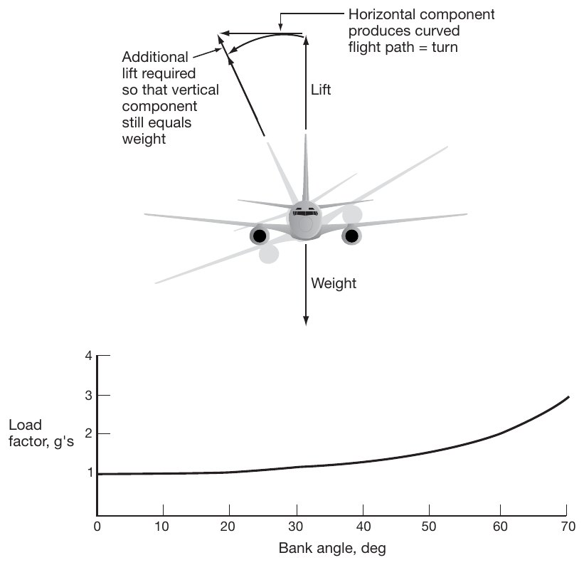
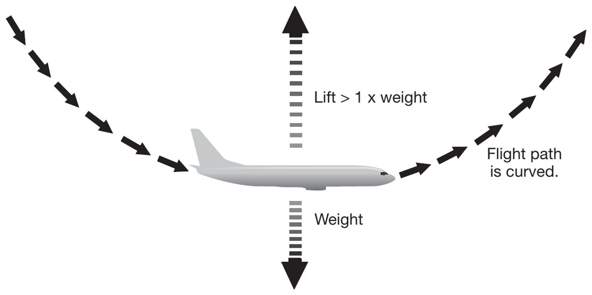
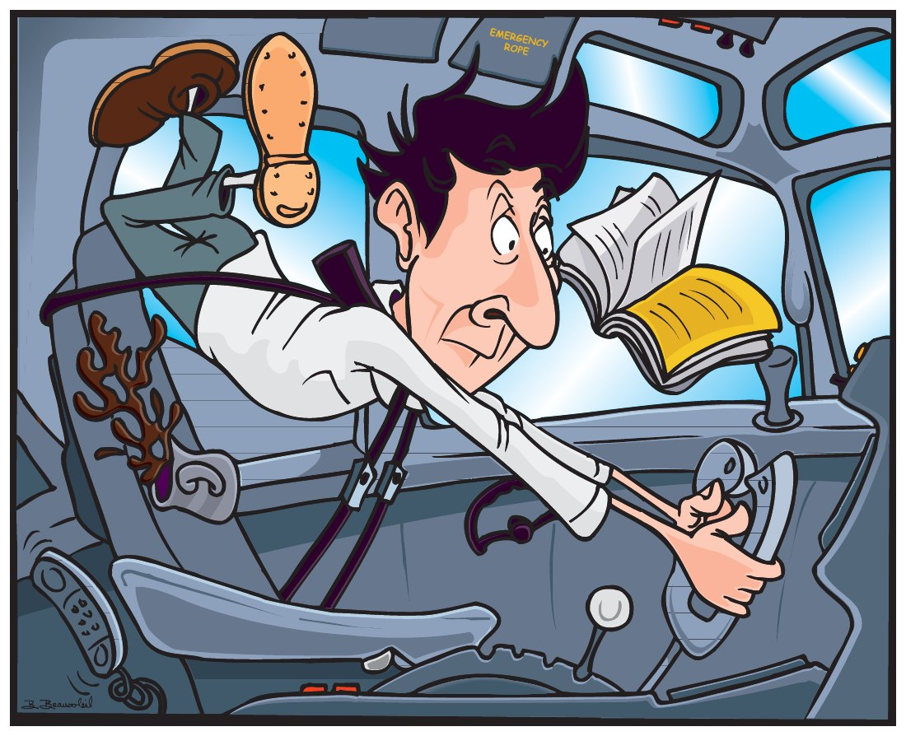

Lesson 06: Load Factor and g-Awareness
Learning objectives
- Calculate load factor in a level turn and its effect on stall speed.
- State the structural limit load factors of transport aeroplanes and the meaning of manoeuvring speed.
- Apply g-awareness during upset recovery.
A 60° level turn means 2 g — and a stall speed 41 % higher.
Load factor
Load factor (n) is the ratio of lift to weight, felt as "g". In straight and level flight n = 1. In a level turn the wing must produce extra lift to hold altitude:
n = 1 / cos(bank angle) — 30° gives 1.15 g, 45° gives 1.41 g, 60° gives 2 g.
Load factor (2)

Load factor and stall speed
Stall speed increases with the square root of the load factor: VS(n) = VS × √n. At 60° of bank (2 g) the stall speed is about 41 % higher. This is why steep turns at low speed are dangerous, and why unloading — relaxing back pressure to reduce g — is a powerful way to lower the stall speed and the angle of attack during recovery.

Structural limits
- Transport aeroplanes are typically designed for limit manoeuvring load factors of +2.5 g to −1.0 g with flaps retracted, and +2.0 g to 0 g with flaps extended. Check your AFM.
- Exceeding these limits may cause permanent structural deformation; the ultimate load (1.5 × limit) is where failure may occur.
- Rolling and pulling at the same time (a "rolling pull") produces asymmetric loads, which have lower limits.
Manoeuvring speed (VA)
Below VA, a single full deflection of one flight control in one axis should not exceed structural limits. VA does not protect against:
- full deflections in more than one axis at the same time;
- rapid alternating or reversing inputs, especially of the rudder (Lesson 8 — American Airlines 587).
g-awareness in recovery
- In a nose-high recovery, reduced or even slightly negative g (unloading) is often needed. It may feel uncomfortable; loose objects and unrestrained people can be thrown about.
- In a nose-low recovery, roll wings level before pulling, then pull smoothly — avoiding both the stall warning and excessive g.
- The sensation of g is not a reliable indicator of attitude; use the instruments.

Changing and lateral load factor
- Increasing g (pulling) raises the stall speed at that moment; decreasing g (unloading) lowers the angle of attack — the basis of every stall and nose-high recovery.
- Negative g lifts people and objects, may cause fuel and oil system warnings on some types, and has much lower structural limits than positive g. Use only the unloading needed.
- Lateral load factor comes from sideslip. It is shown by the slip/skid indicator and felt as a sideways push. Large sideslip at high speed creates high loads on the fin and strong roll — keep the aircraft coordinated (Lesson 8).
- Managing g: smooth, deliberate inputs; know the limits of your configuration (flaps up vs down); stop the pull at the stall warning or at the g limit, whichever comes first.
Key takeaways
- Level turn: n = 1/cos(bank); 60° of bank = 2 g.
- Stall speed rises with √n: +41 % at 2 g. Unloading lowers stall speed and angle of attack.
- Typical limits flaps up: +2.5 g / −1.0 g. Avoid rolling pulls.
- VA does not protect against multiple-axis or alternating full inputs.
Knowledge check
An aircraft with a 1 g stall speed of 120 kt is in a level 60° bank turn. What is its approximate stall speed?